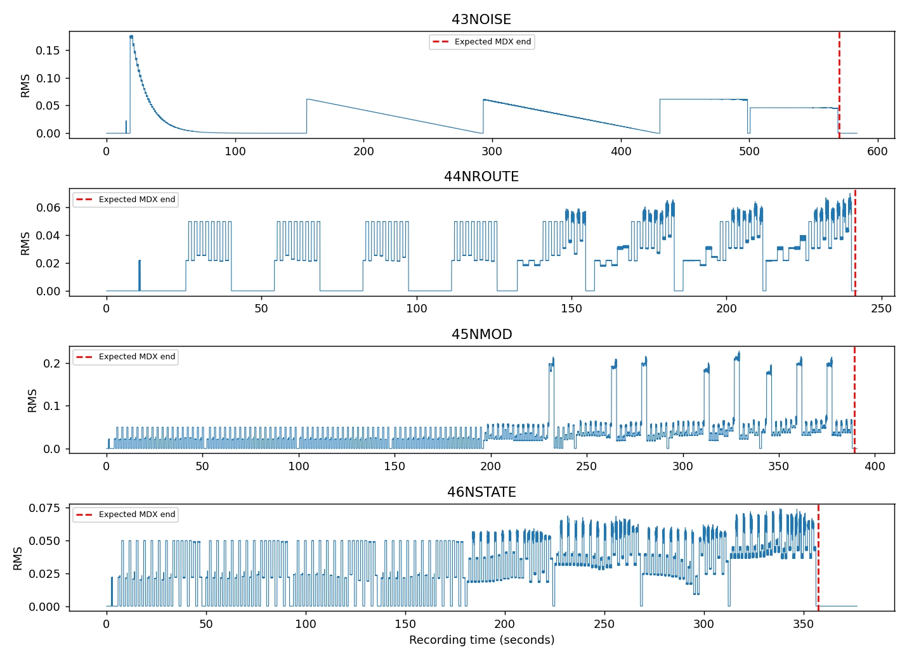
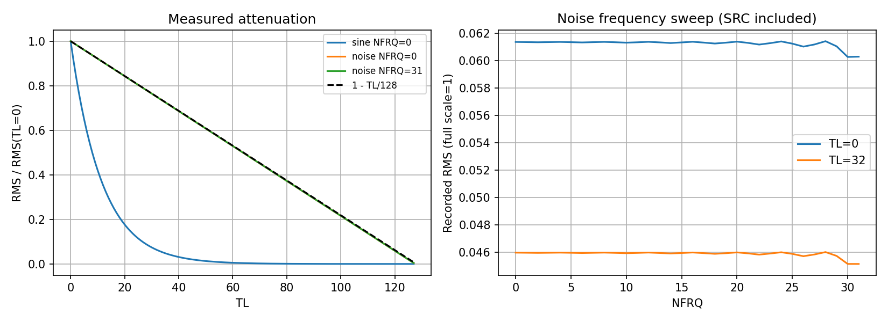
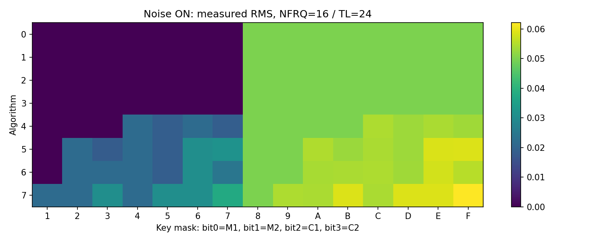

2026-09-29 • independent-opm 0.11b • Noise normalization update
43～46の全1624測定区間を確認しました。46は再録音に置き換えています。今回の試験範囲に基づき、ノイズの最大振幅を従来の1/4に修正しました。全レジスタ・全過渡状態の完全再現を証明するものではありません。
All 1,624 scheduled measurement windows are present. The replacement recording of 46 is used. Noise amplitude normalization is corrected to one quarter of its previous value. This validates the tested conditions, not every register combination or transient.
96kHz・24bit・ステレオ。指定クロック4MHz。フルスケール到達サンプル0。元録音は同梱せずrecordings.jsonのSHA-256で特定します。46の再録音は報告内でMDX名に合わせて46NSTATE.flacと表記しています。
| Recording | Recorded seconds | MDX seconds | Complete windows | Missing windows |
|---|---|---|---|---|
| 43NOISE.flac | 583.889 | 555.942 | 448 | 0 |
| 44NROUTE.flac | 242.129 | 231.932 | 240 | 0 |
| 45NMOD.flac | 390.731 | 389.218 | 576 | 0 |
| 46NSTATE.flac | 376.858 | 355.664 | 360 | 0 |

46は376.858秒。同期音と区間境界の照合により、ALG7終盤・終端の無音まで収録済みと確認。前回の243.247秒の録音は採用していません。
The replacement 46 recording is 376.858 s long and includes the final ALG7 block and ending silence. The earlier truncated capture is superseded.
43のTL0正弦波RMSは0.173815（正弦波ピーク換算0.24581）、NFRQ0ノイズRMSは0.061373。その比は0.24967、約−12.05dBです。従来は両者の最大レベルを1としていましたが、今回ノイズのみ0.25倍に修正しました。録音にはSRCフィルタが含まれるため、チップの生整数出力と厳密に一致する係数の証明ではなく、実測に基づく正規化モデルです。
Measured noise RMS / sine peak is approximately 0.24967 (−12.05 dB). The old model used the same maximum level for both. Only the noise branch is now scaled by 0.25. This is a measurement-based normalization model; SRC filtering prevents claiming an exact raw integer chip scale.
修正後: noise = sign × 0.25 × max(0, 1 − attenuation / 96)。attenuationは既存のEG・TL・AM合成値です。今回検証したのは主に一定EG・AM無効条件であり、EG/AM合成式自体は変更していません。

TL32/64/96/127のノイズ正規化RMS（NFRQ0）は0.749084 / 0.498167 / 0.247250 / 0.004169。既存の1−TL/128は0.75 / 0.5 / 0.25 / 0.0078125です。直線減衰は支持されますが、高TL末端・量子化には差が残ります。NFRQ全域での記録RMS変動はTL0で約0.164dB、TL32で約0.165dB。記録経路の周波数特性を含みます。
Linear TL attenuation is supported. Endpoint quantization and EG/AM behavior remain approximate. Recorded NFRQ-dependent RMS spread includes capture filtering and has not been converted into a frequency-dependent chip gain correction.

ノイズONでALG0～3はC2を含むキー組合せだけが発音。ALG4はC1、ALG5/6はM2・C1、ALG7はM1・M2・C1も出力に残りました。マスク順はレジスタ配列順M1,M2,C1,C2です。
45のALG0～3で上流TL・MUL変更時のノイズRMS最大/最小差は0.00048dB以下。46のALG0～3でもFB全8段階のノイズ音量はほぼ一定。ALG4～7の全体音量変化には他キャリアが含まれるため、ノイズ自身の変調と同一視しません。これはRMSの比較であり、生波形のビット一致の証明ではありません。
With noise enabled, C2 is the audible source in ALG0–3; additional carriers remain in ALG4–7. Upstream TL/MUL changes in ALG0–3 show less than 0.00048 dB RMS spread. Feedback sweeps show similarly stable noise amplitude. Composite RMS changes in ALG4–7 do not by themselves demonstrate modulation of the noise source.
46は全ALGについてNFRQ0/16/31でノイズON→C2キーOFF→C2キーON→ノイズOFFを収録。C2キーOFF区間のALG0～3のRMSは約1.3×10⁻⁷（録音床付近）、ALG4～7はそれぞれ約0.0186 / 0.0317 / 0.0244 / 0.0376で他キャリアが残りました。C2再ONではノイズ成分が戻っています。キーを再投入しないノイズON/OFF区間も記録されています。
All eight algorithms include sustained noise switching and C2 key-off/on at NFRQ0/16/31. C2-off windows fall near the recording floor in ALG0–3, while other carriers remain in ALG4–7. Noise returns on C2 key-on. Sub-sample switching latency, phase continuity, and exact release trajectories were not established by this interior-window analysis.
MDX予定表と同期音・大きな区間境界を照合し、各区間中央60%の左右RMS・ピークを測定。オフセットは43:13.970s、44:9.400s、45:−0.005s、46:1.520s（約10ms精度）。全区間が録音内にあり、終盤の境界も予定に整合します。レジスタ書込みのサイクル精度は保証しません。
Remaining limits: exact TL endpoint quantization, changing EG and AM, instantaneous switching timing, and bit-exact chip/SRC separation. No additional hardware capture is needed for the present 0.25 normalization fix. These recordings alone do not prove universal noise-mode accuracy.
GCCによる直接ビルドで、実測許容帯を用いたノイズ音量テスト・KON・状態保存/復帰・DLL APIとコアの4096フレーム一致を確認。ノイズ音量テストは修正前コードで失敗、修正後コードで成功しました。Windows DLLの実行検証・再ビルド済みWindows DLLの配布は含みません。CMakeはこの作業環境にないためCTest実行とは記載していません。
Noise normalization regression, key mapping, state round-trip and DLL API/core equivalence passed direct GCC builds. The normalization regression fails against the previous core. Windows execution is not tested. State/API layouts and the version name 0.11b are unchanged; noise audio differs after restoring an old snapshot under the corrected implementation.
詳細データ: measurements.csv/json、recordings.json、test.log。再現手順はREADME.md。第三者エミュレータの実装は今回の解析・修正に参照していません。